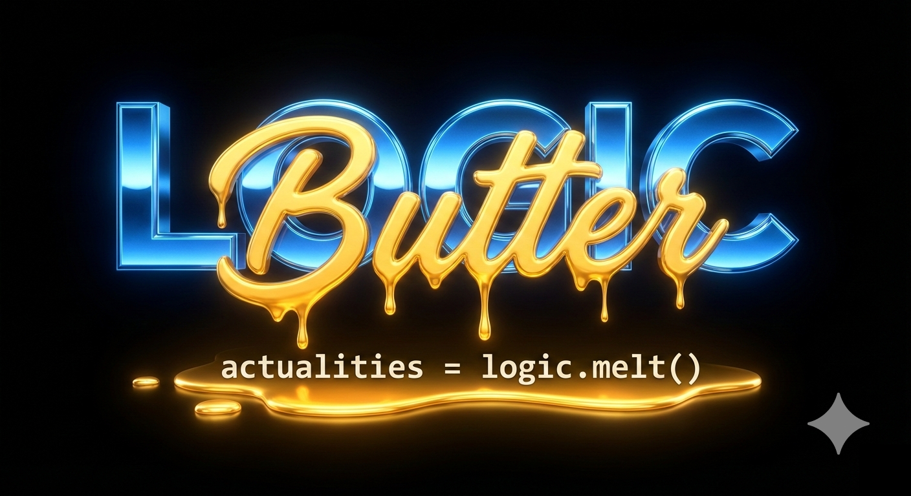

SMOOTH EXECUTION.
SHARP LOGIC.
The Sovereign Build is live. Every asset, every PNG, and every line of code is synchronized to the 4-stage gradient. This is Logic Butter.
ENTER THE WORKSHOP
The Sovereign Build is live. Every asset, every PNG, and every line of code is synchronized to the 4-stage gradient. This is Logic Butter.
ENTER THE WORKSHOPYour data, your logic, rendered without compromise. No gray areas. Only the gradient.